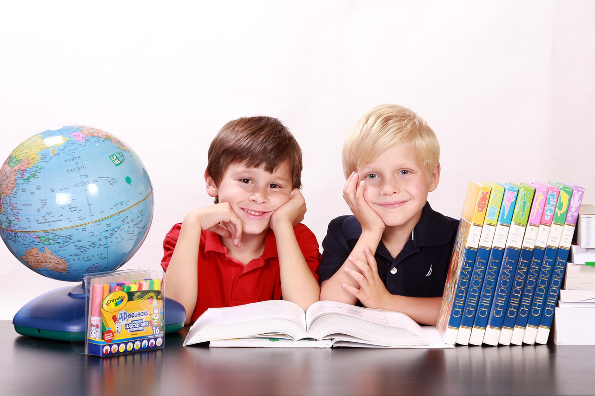
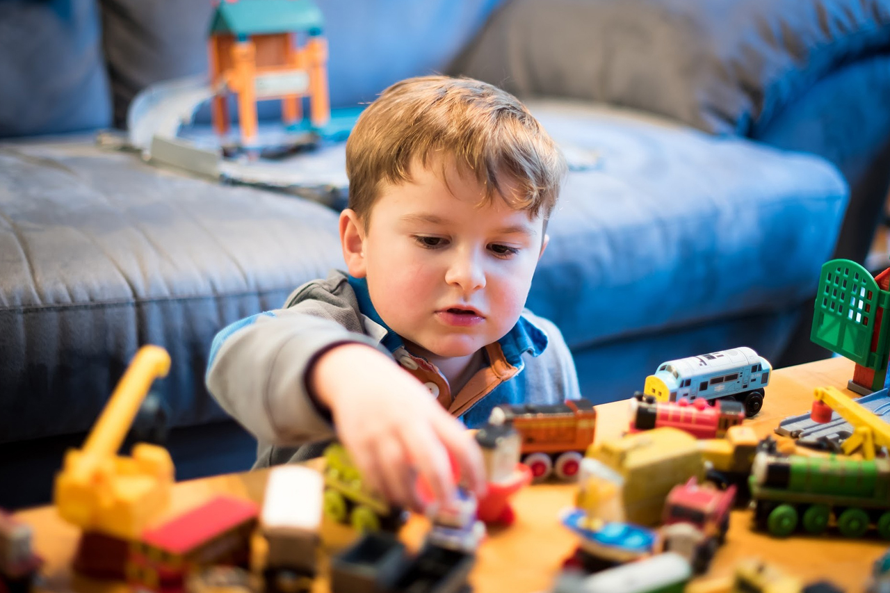
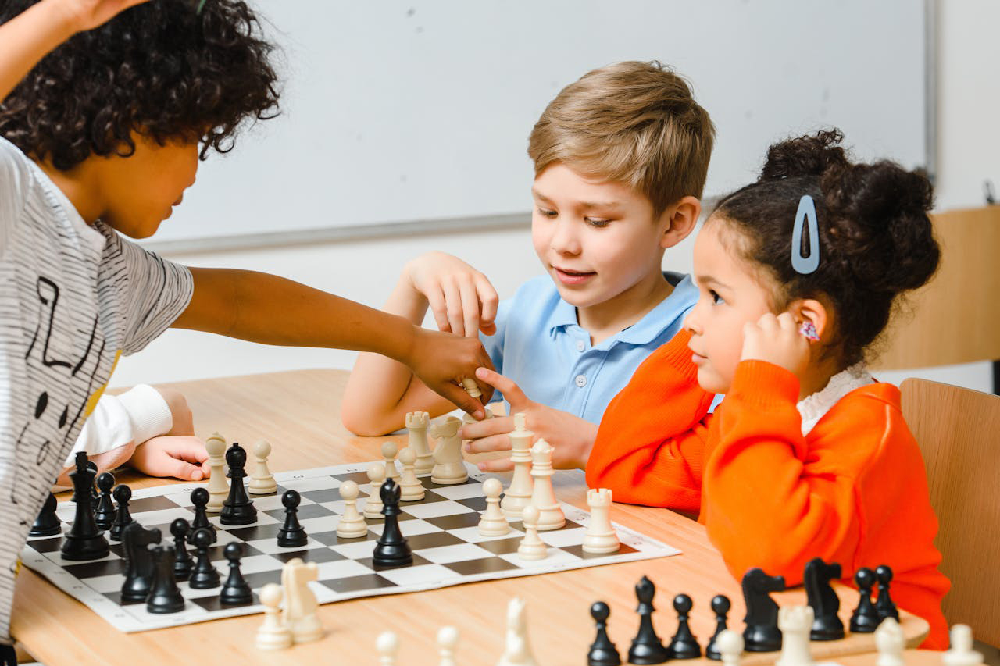
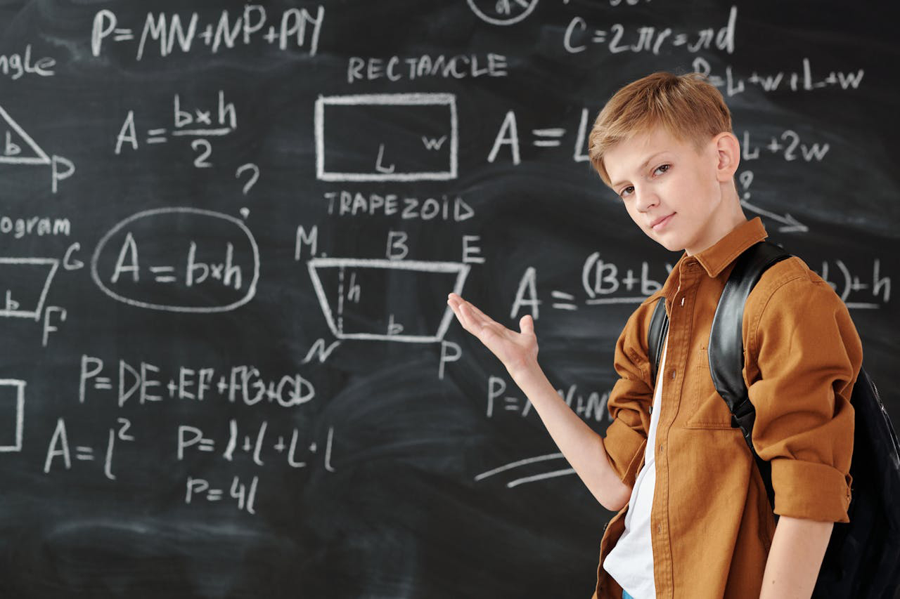
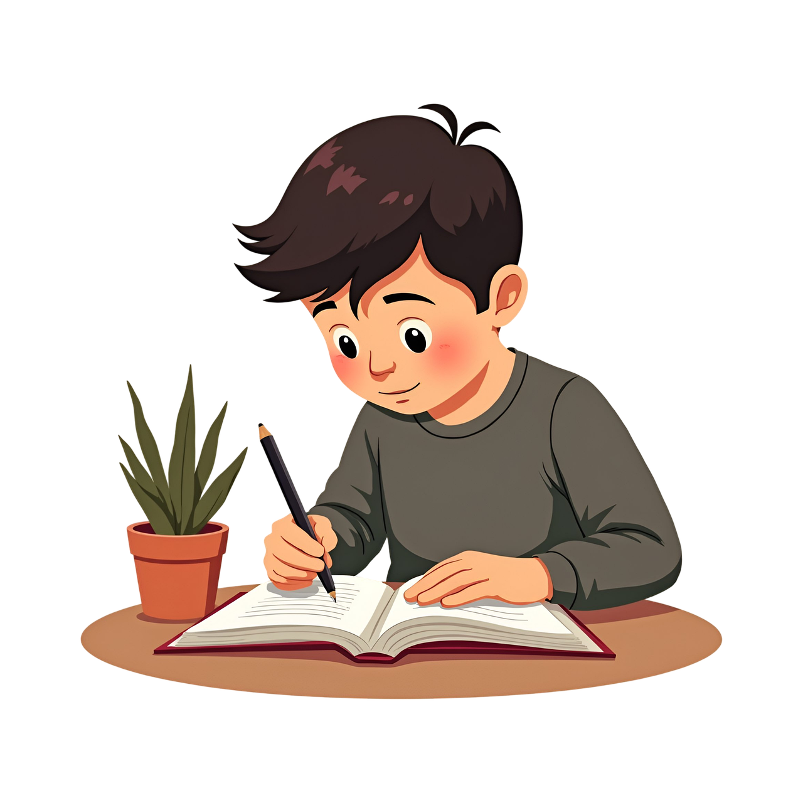
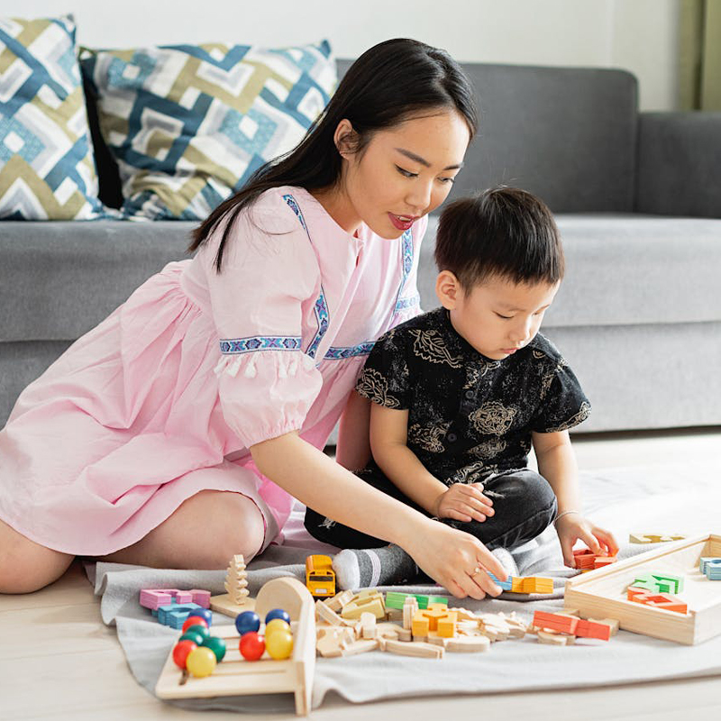
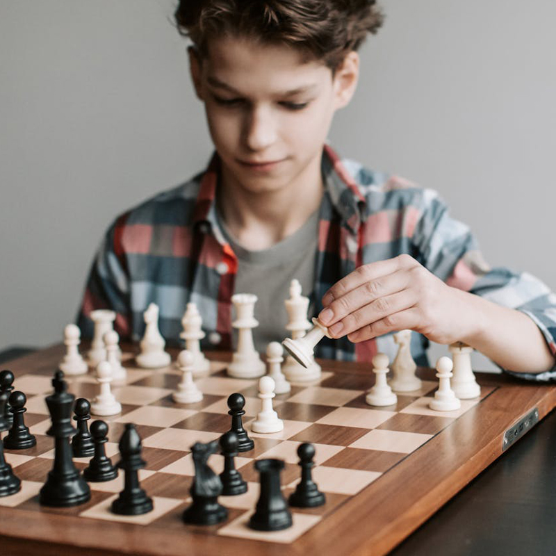
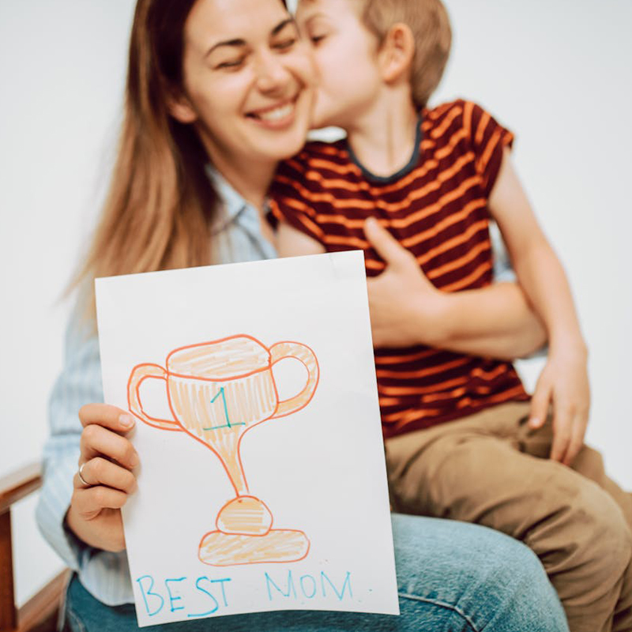

The Tower of Hanoi is a classic logic puzzle made up of three rods and a set of disks in different sizes. The challenge is to move all the disks from one rod to another using only one move at a time. A larger disk can never be placed on top of a smaller one. Though the rules are simple, the puzzle encourages deep thinking and careful planning. It helps kids understand sequences, order, and problem-solving through play. Each move brings learners one step closer to mastering logical thinking.
The Tower of Hanoi is a timeless thinking puzzle loved around the world. It uses simple rules to create a fun but challenging experience through play.
Move one disk at a time between three towers. Larger disks can never sit on smaller ones. These simple rules encourage planning and logical thinking.
This activity is more than just moving pieces—it’s a powerful learning experience. As children play, they naturally begin to think ahead, stay attentive, and plan their moves. Each step encourages calm decision-making and thoughtful actions. Mistakes become learning moments, helping kids grow mentally and emotionally. Over time, this fun challenge strengthens core thinking skills that support everyday learning.

This activity teaches children how to think in a structured and logical way. They learn to understand rules and apply them correctly at every step. Each move requires reasoning about what comes next and what must come first. Kids begin to recognize patterns and cause-and-effect relationships. It sharpens their ability to plan ahead instead of acting randomly. Over time, logical thinking becomes natural and confident.

To succeed, children must pay close attention to every move they make. The task encourages them to block out distractions and stay engaged. They learn to observe carefully and think before acting. This sustained focus helps improve concentration over longer periods. It builds mental discipline in a fun and pressure-free way. Better focus here supports learning in school and daily life.

This activity teaches children that rushing doesn’t lead to success. They learn to wait, think, and move carefully. Mistakes show them the value of staying calm and trying again. Step-by-step progress builds emotional control and resilience. Kids begin to understand that good results take time and effort. Patience developed here helps in learning, relationships, and challenges.

Each challenge presents a problem that needs a clear solution. Children learn to analyze the situation before making a move. They experiment with different strategies and learn from outcomes. This builds confidence in handling complex tasks. They develop the habit of breaking big problems into smaller steps. These problem-solving skills transfer easily to real-life situations.
This activity helps children develop a positive and healthy way of thinking. By solving challenges step by step, kids learn that effort leads to success. Mistakes are seen as part of learning, not something to fear. The game encourages patience, self-belief, and emotional control. Each small win builds confidence and motivation to try again. Over time, children develop a strong growth mindset that supports lifelong learning.


Every completed move helps children believe in their abilities. Small successes turn into big confidence boosts. Kids feel proud when they solve the puzzle on their own.
The game teaches children to break tasks into smaller steps. They learn that big challenges are easier when taken slowly. This skill supports learning across all subjects.

Each move requires choosing the best option. Kids learn to think before acting and understand consequences. This builds smarter choices in real-life situations.

The clear goal keeps children motivated and focused. They learn to stay committed until the task is complete. Reaching the final goal creates a sense of achievement.